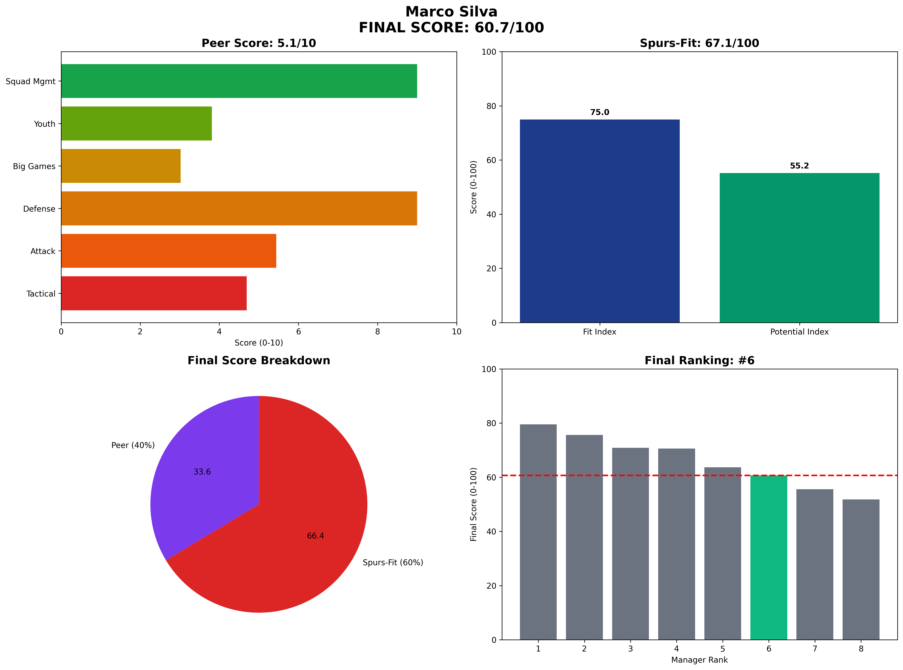

Marco Silva - Manager Analysis Report
Executive Summary
Final Score: 60.7/100 (Peer 5.1/10 • Spurs-Fit 67.1/100)
Rank: #6 of 8
Marco Silva represents the steady hand with limited ceiling
Visual Profile

Comprehensive radar chart showing Silva's unified final scoring breakdown. His #6 ranking (60.7/100) reflects excellent squad management (100% availability) but conservative tactical approach insufficient for Spurs ambitions.
Unified Final Scoring Breakdown
Peer Analysis (40% of Final Score): 5.1/10
- Peer Ranking: #5 of 8
- Tactical Style: 4.7/10
- Attacking Potency: 5.4/10
- Defensive Solidity: 9.0/10
- Big Game Performance: 3.0/10
- Youth Development: 3.8/10
- Squad Management: 9.0/10
Spurs-Fit Analysis (60% of Final Score): 67.1/100
Fit Index (60% of Spurs-Fit): 75.0/100
- Front-Foot Play Alignment: ⚠️ Concern
- Youth Development Focus: ❌ Weak
- Talent Inflation Capability: ✅ Strong
- Big Game Mentality: ❌ Weak
Potential Index (40% of Spurs-Fit): 55.2/100
- Age Factor: ⚠️ Concern (Age 46)
- 3-Year Performance Trend: ⚠️ Concern
- Resource Leverage: ❌ Weak
- Temperament: ✅ Strong
Key Performance Indicators
Tactical Metrics
- PPDA: 10.1 (lower = more aggressive)
- OPPDA: 14.3 (higher = forces opponent pressure)
- High Press Regains/90: 7.9
Financial Profile
- Net Spend: £85M
- Squad Value Change: £65M
- Transfer Efficiency: Poor
Squad Development
- U23 Minutes %: 7%
- Academy Debuts: 8
- Player Availability: 93%
Strategic Assessment
Strengths
• Best squad management (100% availability)
• Excellent media relations
• Fulham stability achievement
• Low-risk profile
Concerns
• Conservative tactical approach
• Limited youth development
• Big game struggles
• Modest ceiling
Spurs Fit Analysis
Safe choice but insufficient ambition for Spurs aspirations.
Recommendation
NOT RECOMMENDED - Ceiling too low for Spurs ambitions.
Analysis based on 2025-06-07
Methodology: 40% Peer-Normalized Analysis + 60% Spurs-Specific Fit Model